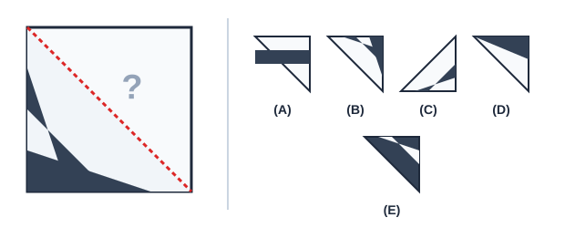

Autoavaliação 3.1.1. 1. O Azulejo Partido.
- Peça A
- Incorreto. A orientação das listras nesta peça é perpendicular ao padrão da metade existente.
- Peça B
- Correto! A peça B tem exatamente o alinhamento das faixas e a inclinação da hipotenusa requerida para encaixar sem giro.
- Peça C
- Incorreto. Esta peça exigiria uma rotação de 180° para encaixar.
- Peça D
- Incorreto. A espessura da faixa central é diferente do padrão do azulejo.
- Peça E
- Incorreto. As cores das faixas clara e escura estão invertidas.
Um azulejo quadrado de lado \(10\text{ cm}\) foi desenhado com faixas diagonais alternadas. Uma linha reta é traçada ligando dois vértices opostos, dividindo o azulejo em dois triângulos idênticos:

Qual das peças abaixo completa perfeitamente a metade que está faltando para recompor o desenho original sem ser girada?
Dica 1.
Dica 2.
Solução.
Pista 1 (Pista Leve): Observe a diagonal de corte: repare de onde parte a faixa escura que toca a linha divisória.
Pista 2 (Pista Forte): A peça não pode ser girada. Procure a opção cuja hipotenusa tenha exatamente os mesmos pontos de contato pretos e brancos que a metade já desenhada na parede.
Resolução Detalhada:
Para que duas metades formem um quadrado contínuo ao longo da diagonal comum, os pontos de transição das cores sobre a hipotenusa devem coincidir exatamente.
Analisando a orientação fixa (sem rotação):
- A peça (A) possui faixas inclinadas a \(90^\circ\) em relação ao padrão;
- A peça (C) corresponde a uma rotação de meia-volta, o que é proibido pelo enunciado;
- A peça (D) tem proporção desigual de listras;
- A peça (B) preserva o vetor de continuidade das linhas e a cor exata em cada vértice.